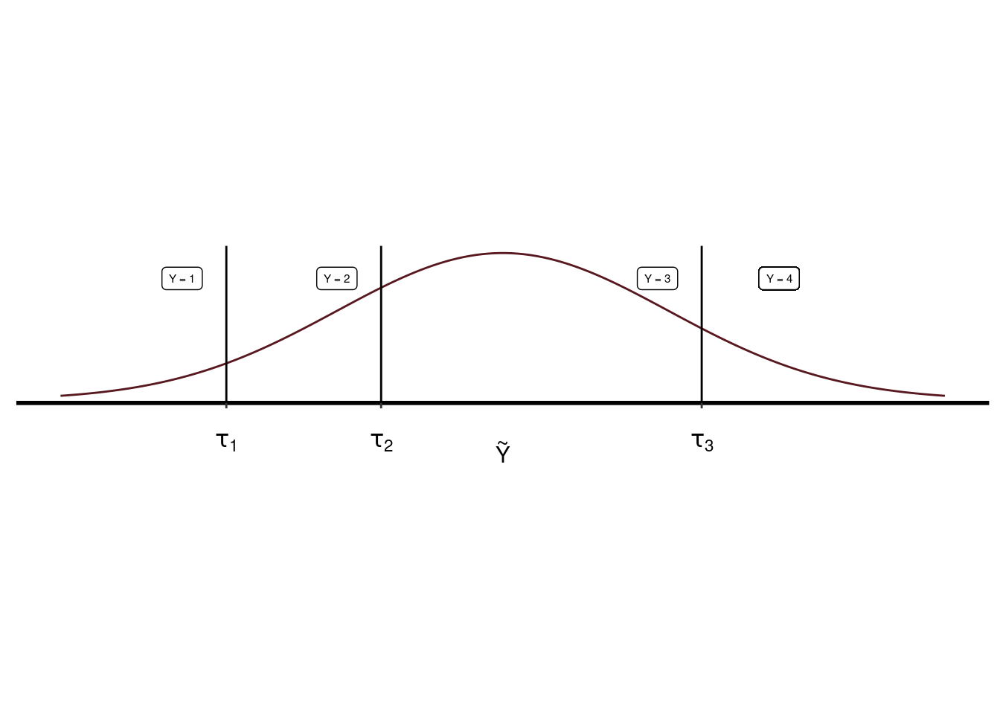
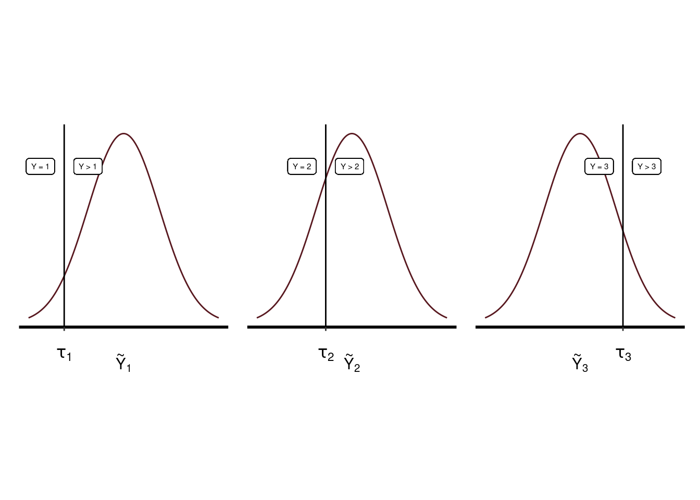
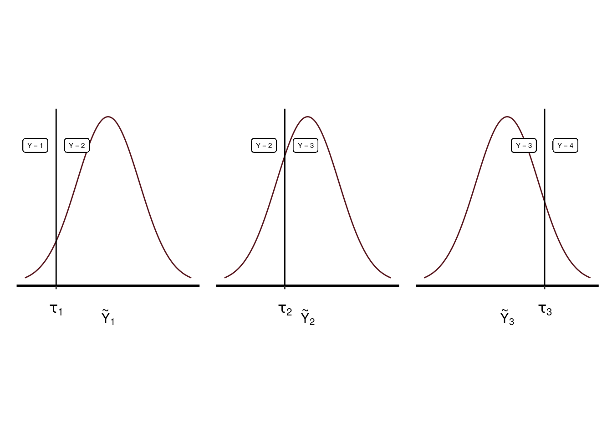
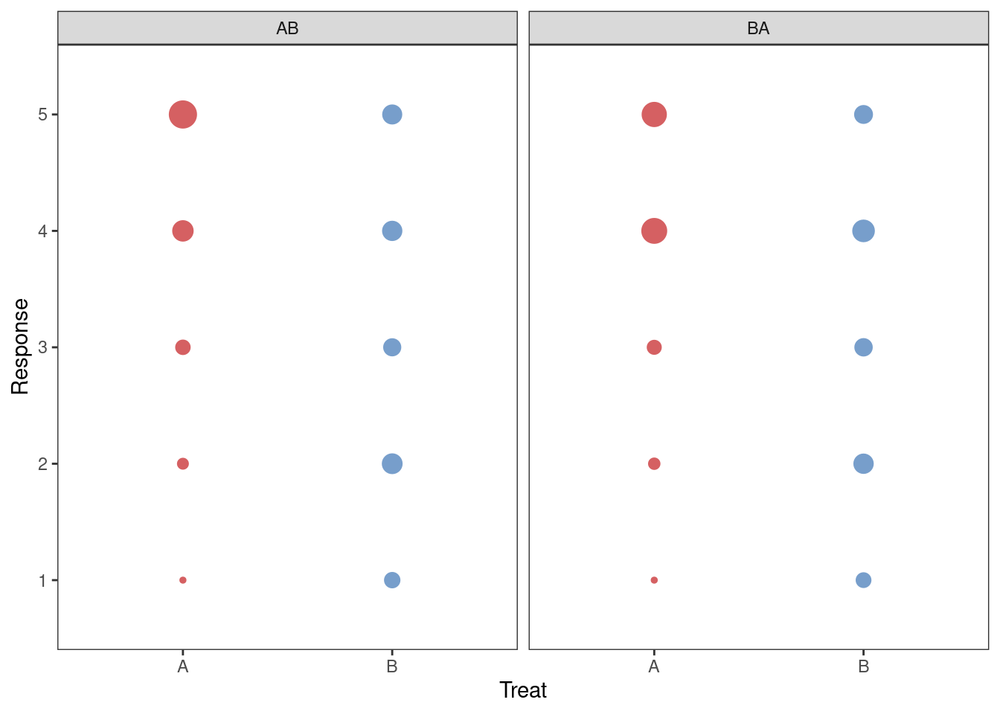
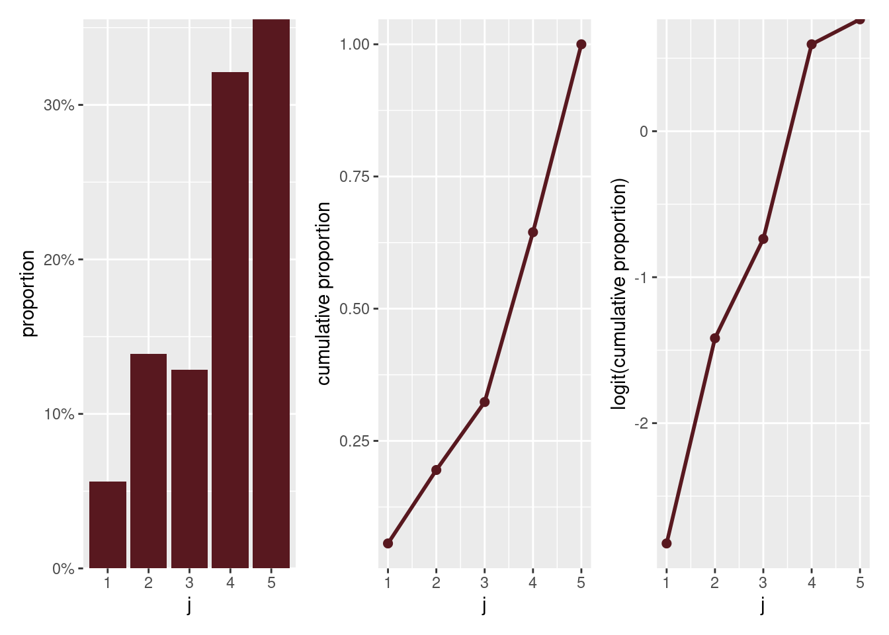

Ordinal regression in R: part 1
A theoretical and applied walkthrough of ordinal regression. Part 1: the frequentist approach with ordinal.
Regresión ordinal
Introducción
El test de Likert es una escala ordinal. Tratar las respuestas a un test de Likert como si fueran cuantitativas como se hizo en el análisis de la varianza del apartado anterior no es correcto por las siguientes razones:
Los niveles de respuesta pueden no ser equidistantes: la distancia entre un par de opciones de respuesta puede no ser la misma para todos los pares de opciones de respuesta. Por ejemplo, la diferencia entre “Muy en desacuerdo” y “En desacuerdo” puede ser mucho menor para un encuestado que la diferencia entre “De acuerdo” y “Muy de acuerdo”.
La distribución de las respuestas ordinales puede ser no normal. En particular esto sucederá si hay frecuencias altas de respuesta en los extremos del cuestionario.
Las varianzas de las variables no observadas que subyacen a las variables ordinales observadas pueden diferir entre grupos, tratamientos, periodos, etc.
En Liddell y Kruschke (2018) se han analizado los problemas que puede ocasionar tratar datos ordinales como si fueran cuantitativos constatando que se pueden presentar las siguientes situaciones:
- Se pueden encontrar diferencias significativas entre grupos cuando no las hay: Error tipo I.
- Se pueden obviar diferencias cuando en realidad sí existen: Error tipo II.
- Incluso se pueden invertir los efectos de un tratamiento.
- También puede malinterpretarse la interacción entre factores.
Todos estos problemas pueden ser tratados con la regresión ordinal.
Variantes de la regresión ordinal.
Has tres clases de regresión ordinal Bürkner y Vuorre (2019):
- Regresión ordinal acumulativa.
- Regresión ordinal secuencial.
- Regresión ordinal adyacente.
Regresión ordinal acumulativa
El modelo acumulativo ((cumulative?)) presupone que la variable ordinal observada, \(Y\), proviene de la categorización de una variable latente (no observada) continua \(\tilde{Y}\).

Regresión ordinal secuencial

Regresión ordinal adyacente

Preparación
Rows: 2,980
Columns: 6
$ Group <fct> AB, AB, AB, AB, AB, AB, AB, AB, AB, AB, AB, AB, AB, AB, AB, A…
$ Period <fct> 1, 1, 1, 1, 1, 1, 1, 1, 1, 1, 1, 1, 1, 1, 1, 1, 1, 1, 2, 2, 2…
$ Treat <fct> A, A, A, A, A, A, A, A, A, A, A, A, A, A, A, A, A, A, B, B, B…
$ Subject <fct> 4, 4, 4, 4, 4, 4, 4, 4, 4, 4, 4, 4, 4, 4, 4, 4, 4, 4, 4, 4, 4…
$ Question <fct> Q01, Q02, Q03, Q04, Q05, Q06, Q07, Q08, Q09, Q10, Q11, Q12, Q…
$ Response <fct> 3, 3, 3, 3, 3, 3, 3, 3, 3, 3, 3, 3, 3, 3, 3, 3, 3, 3, 3, 3, 3…| Group | Period | Treat | Response | ||||
|---|---|---|---|---|---|---|---|
| 1 | 2 | 3 | 4 | 5 | |||
| AB | 1 | A | 2 | 25 | 71 | 203 | 434 |
| AB | 2 | B | 87 | 185 | 121 | 172 | 166 |
| BA | 1 | B | 76 | 174 | 127 | 237 | 138 |
| BA | 2 | A | 2 | 30 | 64 | 345 | 321 |

Modelo de enlace logit acumulado
Teoría
Si tenemos \(J\) respuestas ordinales. La probabilidad de una respuesta concreta \(j\) será \(\pi_j\). Entonces, la función de probabilidad acumulada ordinal de una respuesta \(y_i\) será:
\[ P(y_i \leq j) = \pi_{i1} + \dots + \pi_{ij}. \]
Por ejemplo, si en nuestra muestra la proporción de respuestas correspondiera a los valores poblacionales, tendríamos la siguiente distribución acumulada:

Aunque hay otras funciones de enlace, el enlace logit es el más utilizado y es el que se representa en el panel derecho (Figura 1).
\[ \text{logit} (P(y_i \leq j) = \log \frac{P(y_i \leq j)}{1 - P(y_i \leq j)} \tag{1}\]
La función de enlace logit acumulada (Ecuación 1) no está definida para \(j = J\), ya que \(1 - P(Y_i \leq J) = 1 - 1 = 0\).
En nuestra escala de Likert tenemos \(J\) = 5 niveles, el modelo mixto que vamos a plantear es el siguiente:
\[ \begin{aligned} \text{logit}(p(y_i \leq j)) &= \theta_j - \beta_1 \text{Period}_i - \beta_2 \text{Treat}_i - u( \text{Subject}_i) - v( \text{Question}_i) \\ i &= 1, \dots n \; \; \; \; \; \; j = 1, \dots, J - 1 \end{aligned} \]
donde \(\theta_j\) es el umbral de la categoría \(j\) y son \(J-1\) = 4 interceptores. Los coeficientes de los efectos fijos, \(\beta_1\) and \(\beta_2\), son independientes \(j\), por lo que cada \(\beta\) tiene el mismo efecto en los \(J-1\) logits acumulados. Los efectos aleatorios, Subject y Question, también son independientes de \(j\), y se presupone que siguen una distribución normal: \(u(\text{Subject}_i) \sim N(0, \sigma_u^2)\) y \(u(\text{Question}_i) \sim N(0, \sigma_v^2)\) respectivamente. La función de enlace logit es la más popular aunque hay otras opciones. También es habitual encontrar la parametrización con los signos negativos en los parámetros \(\beta\). De esta forma la interpretación de los valores de los parámetros \(\beta\) es la misma que en una regresión lineal ordinaria. Es decir que a mayor valor
The subtraction of terms in the above model is new to me. The main reason seems to be for familiar interpretation: the larger the value of any independent term \(\beta x\), the smaller the thresholds \(\theta_j\), and therefore a larger probability of the a response falling into a category at the upper end of the scale. This way, \(\beta\) has the same direction of effect as in ordinary linear regression.
We are essentially modeling a “chain” of logistic regressions where the binary response is “less than or equal to a certain level” vs “greater than that level”. In this case, with \(J\) = 5, the thresholds \(\theta_j\) are capturing the adjusted log-odds of observing:
- \(j\) = 1: log-odds of
rating= 1 vs. 2-5 - \(j\) = 2: log-odds of
rating= 1-2 vs. 3-5 - \(j\) = 3: log-odds of
rating= 1-3 vs. 4-5 - \(j\) = 4: log-odds of
rating= 1-4 vs. 5